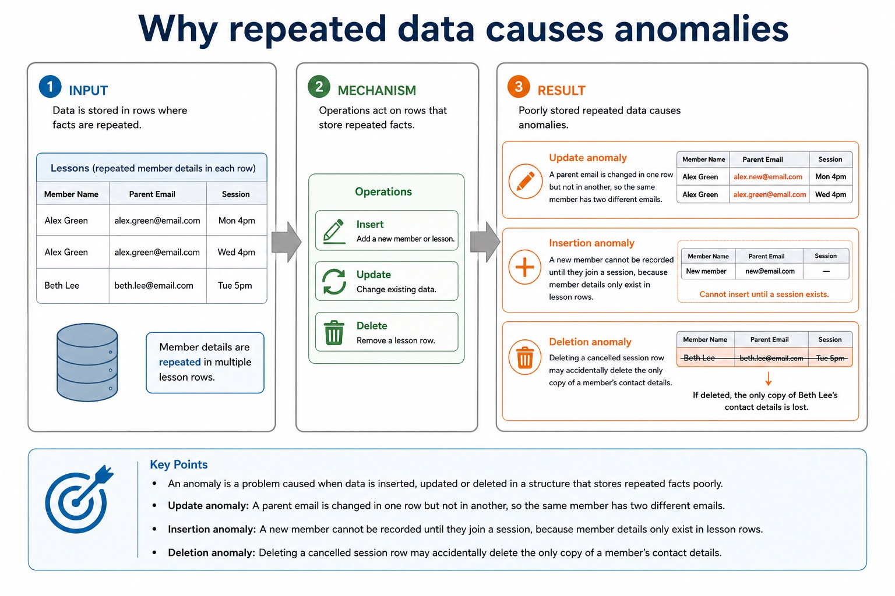

A file-based approach stores data in separate application files. The same fact may be repeated in several files or records, causing redundancy and wasted storage. Updating only some copies creates inconsistency; insertion and deletion can also lose or require unrelated facts. Separate files may use incompatible formats, isolate data, duplicate validation/security code and make shared querying, concurrent access, backup and recovery harder to manage.
A relational database addresses these limitations by separating entities into linked tables, storing shared facts once, identifying records with keys and enforcing relationships and constraints centrally. A DBMS supplies shared query processing, integrity, security, access rights and backup. These mechanisms reduce particular file-based risks; a relational design is not automatically smaller, simpler or error-free.
Relational databases address file-based duplication, inconsistency, isolation and access problems through related tables, keys, constraints and managed queries.
Worked example: Replace a repeated order file
A flat Order file repeats CustomerName and Address in every order row. Split it into Customer(CustomerID, CustomerName, Address) and Order(OrderID, CustomerID, OrderDate). CustomerID links each order to one stored customer, so an address is updated once instead of in every order row.
Flat-file vs relational comparison
Flat-file vs relational comparison: source-grounded visual explanation.
Lesson fact: Flat-file
Lesson fact: Relational
Lesson fact: Structure
Lesson fact: Single table
Lesson fact: Multiple linked tables
Lesson fact: Redundancy
Lesson fact: More likely because related details are repeated
Lesson fact: Reduced because shared data can be stored once
Lesson fact: Consistency
Lesson fact: Harder to maintain if repeated values are updated differently
Lesson fact: Improved because updates can be made in one relevant table
Lesson fact: Complexity
Core syllabus practice
File-based limitations and relational solutions: apply and assess
Targeted practice
1. Why can repeated data create inconsistency?
Show answer
One copy may be changed while another remains out of date.
2. What is data isolation in a file-based system?
Show answer
Related data is kept in separate files or formats, making combined access and queries difficult.
3. Which relational feature connects an order to its customer?
Show answer
A foreign key in Order referring to the Customer primary key.
4. Why is 'relational databases are always simpler' not a valid benefit?
Show answer
Linked tables and DBMS administration add complexity; benefits must be tied to a file-based limitation.
Exam-style question
6 marks
A clinic repeats patient details in separate appointment, billing and treatment files. Explain three file-based limitations and a relational-database feature that addresses each one.
Show MS
Answer
Guidance
Marks
repeated patient facts cause redundancy or wasted storage
Do not award a generic claim such as 'relational is better' without a named limitation, mechanism and consequence.
1
linked tables store a shared patient fact once
1
separate copies can become inconsistent after partial updates
1
central keys/constraints and one stored fact improve consistency
1
isolated files/formats make combined retrieval or control difficult
1
DBMS query, integrity, access-right or backup service addresses the named difficulty
One giant table looks simple until one phone number changes in twelve places.
This lesson compares flat-file databases with relational databases. The key idea is not that
flat files are "bad"; it is that repeated related data creates maintenance problems as the
data grows. Relational design separates data into linked tables to reduce redundancy and
inconsistency.
Defineflat-file and relational database structures
Compareredundancy, consistency, update effort and complexity
Choosea suitable structure for a scenario with justified reasons
Flat-fileone tablerepeated customer detailseasy to start, painful to maintain
Relationalseveral linked tablesshared data stored oncebetter consistency, more design needed
Why this matters
Cambridge-style answers reward cause and consequence: relational design reduces redundancy because shared data is stored once.
Common error
Do not say relational databases are always better. For a very small single-user list, a flat file may be simpler and sufficient.
Warm-up hook
A tutor keeps one spreadsheet: every lesson row repeats student name, phone, parent email and course.
Then a parent changes email. The spreadsheet says, "I have twelve personalities now."
Choose the issue most directly caused by flat-file structure.
Knowledge point 1
Flat-file database
A flat-file database stores data in a single table. It is simple, but related data may be repeated in many records.
MemberID
Name
ParentEmail
Session
FeePaid
M104
Amira Chen
lee@example.com
Python
TRUE
M104
Amira Chen
lee@example.com
Robotics
FALSE
M211
Leo Singh
patel@example.com
Python
TRUE
Chinese support: flat-file = 单表结构。The problem is not the word "file"; the problem is using one table for related repeated data.
Lesson fact: A flat-file database stores data in a single table. It is simple, but related data may be repeated in many records.
Lesson fact: MemberID
Lesson fact: ParentEmail
Lesson fact: Amira Chen
Lesson fact: lee@example.com
Lesson fact: Robotics
Lesson fact: Leo Singh
Lesson fact: patel@example.com
Knowledge point 2
Relational database
A relational database stores data in multiple tables that are linked using shared fields. Shared facts can be stored once and referenced where needed.
Member
MemberID | Name | ParentEmail
M104 | Amira Chen | lee@example.com
M211 | Leo Singh | patel@example.com
linked by MemberID
Enrolment
EnrolID | MemberID | Session | FeePaid
E501 | M104 | Python | TRUE
E502 | M104 | Robotics | FALSE
Exam sentence:A relational database reduces redundancy by separating related data into linked tables, so a fact such as a parent email is stored once instead of repeated in every lesson record.
Lesson fact: A relational database stores data in multiple tables that are linked using shared fields. Shared facts can be stored once and referenced where needed.
Lesson fact: A relational database reduces redundancy by separating related data into linked tables, so a fact such as a parent email is stored once instead of repeated in every lesson record.
Knowledge point 3
Flat-file vs relational comparison
Feature
Flat-file
Relational
Structure
Single table
Multiple linked tables
Redundancy
More likely because related details are repeated
Reduced because shared data can be stored once
Consistency
Harder to maintain if repeated values are updated differently
Improved because updates can be made in one relevant table
Complexity
Simpler to create for a small, simple dataset
Needs more planning and understanding of relationships
Best fit
Small, single-purpose, low-change data
Data with repeated entities, many users, updates and queries
Knowledge point 4
Why repeated data causes anomalies
An anomaly is a problem caused when data is inserted, updated or deleted in a structure that stores repeated facts poorly.
Update anomalyA parent email is changed in one row but not in another, so the same member has two different emails.Insertion anomalyA new member cannot be recorded until they join a session, because member details only exist in lesson rows.Deletion anomalyDeleting a cancelled session row may accidentally delete the only copy of a member's contact details.
Why repeated data causes anomalies

Why repeated data causes anomalies: source-grounded visual explanation.
Lesson fact: An anomaly is a problem caused when data is inserted, updated or deleted in a structure that stores repeated facts poorly.
Lesson fact: Update anomaly A parent email is changed in one row but not in another, so the same member has two different emails.
Lesson fact: Insertion anomaly A new member cannot be recorded until they join a session, because member details only exist in lesson rows.
Lesson fact: Deletion anomaly Deleting a cancelled session row may accidentally delete the only copy of a member's contact details.
Interactive structure chooser
Choose flat-file or relational for the scenario
Choose a scenario, then justify the structure.
A strong answer mentions data size, repetition, updates or relationships.
Interactive anomaly checker
What can go wrong in a flat file?
Choose an event to classify the problem.
If there is no anomaly, explain why the simple structure may be acceptable.
Worked examples
From scenario to justified design choice
Practice with instant checking
Short-answer checks
Type concise answers. Use the answer button only after committing to an attempt.
Mistake debugging
Repair common wording errors
Exam-style questions
Original Cambridge-style practice with expandable MS
These are original questions written in Cambridge style. The mark schemes are strict about cause-and-effect wording.
Summary
What to remember
Flat-fileSingle table; simple for small datasets but may repeat related data.
RelationalMultiple linked tables; reduces redundancy and supports consistent updates.
Exam answerName the structure, then explain a consequence such as reduced redundancy or increased design complexity.
Homework
Clear tasks for consolidation
Task 1: DefinitionsWrite exam-ready definitions for flat-file database, relational database, redundancy and inconsistency. Add Chinese support notes for the two hardest terms.Task 2: Scenario designA music school stores students, teachers, instruments and weekly lessons. Choose flat-file or relational and give three reasons linked to the scenario.Task 3: 6-mark answerAnswer: "Explain why a relational database may be more suitable than a flat-file database for a library loan system." Include redundancy, consistency and one possible disadvantage.